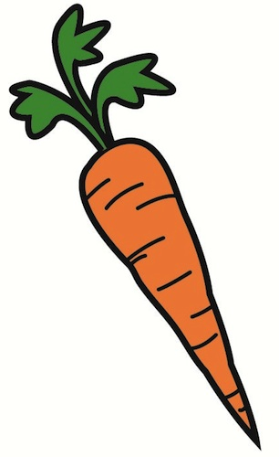
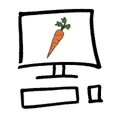
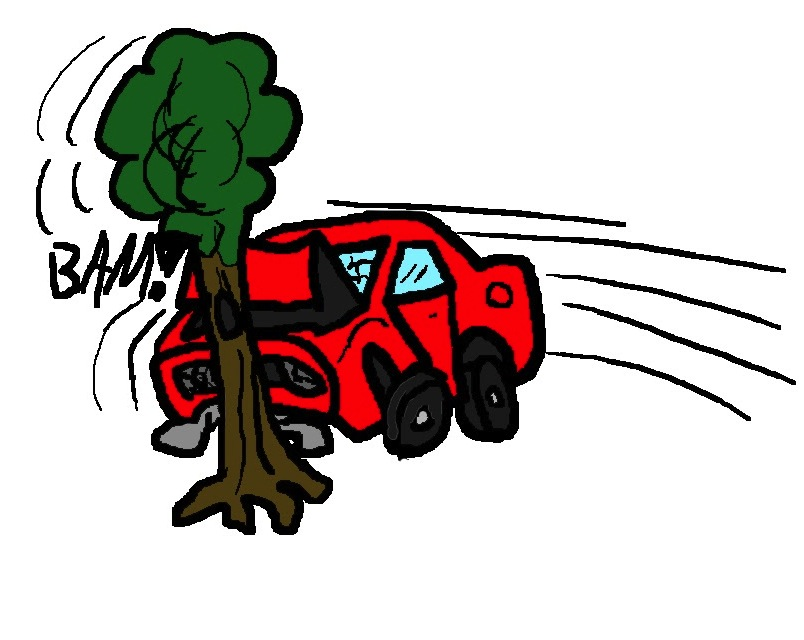

Setting The Stage Musings on building a Single Page Application
Single Page App
Single
Page
App
?
what is it?

☞

write once, run everywherethe answer to our wildest dreamsusers want a desktop app experienceso, let's do everything in the browserbut which browser?

hum, this is kind of hardand it's definitely note 'write once, run everywhere'so some smart people started thinking about the problem
and along came jquerythe answer to our wildest dreamsor something a little differentManaging the DOMhum, this is kind of hardso some smart people started thinking about the problem
Then came along the Javascript framework
press on keys hoping
a branch covered in think moss
glimps of what's to come
walk through an orchard
blackbirds alight on boughs
each tree trimmed just so
"Simple Made Easy" by Rich Hickey http://www.infoq.com/presentations/Simple-Made-Easy
Node Aesthetic by James Halliday http://substack.net/node_aesthetic